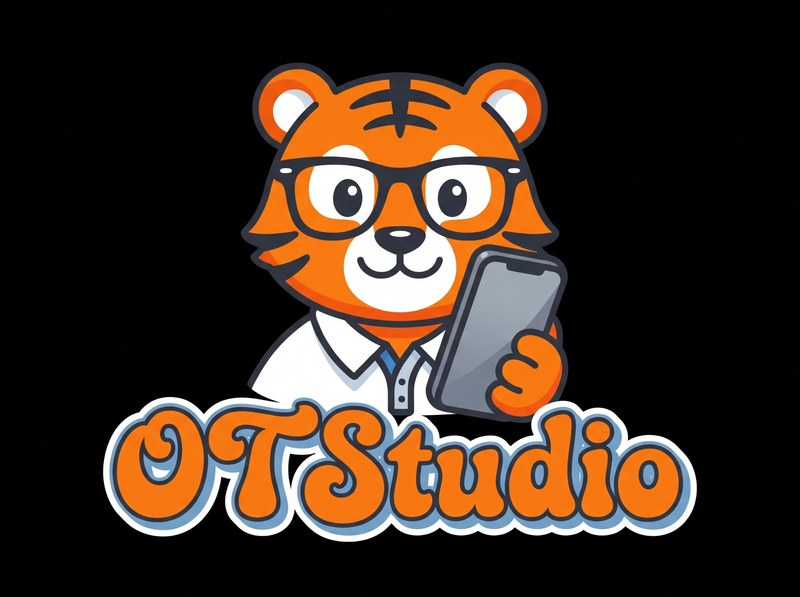
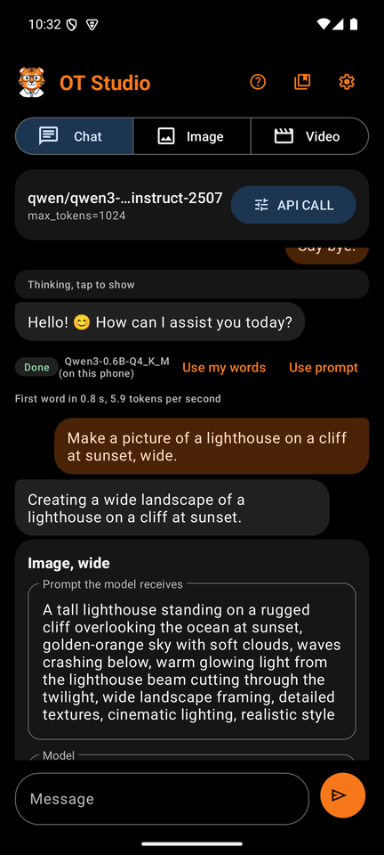
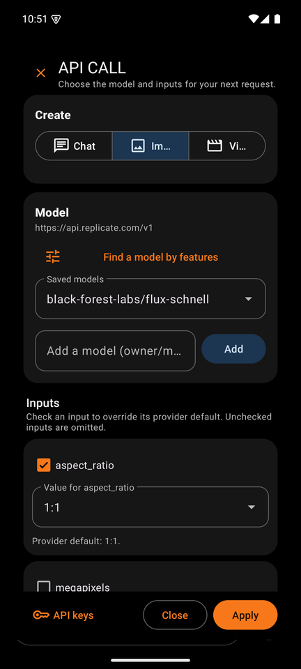
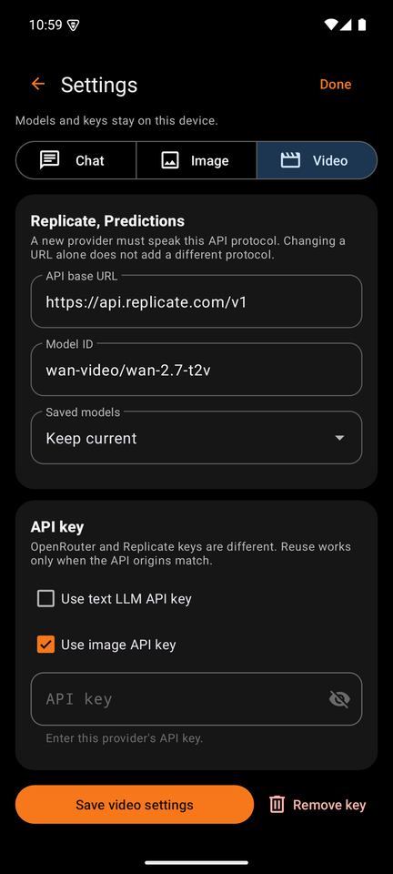
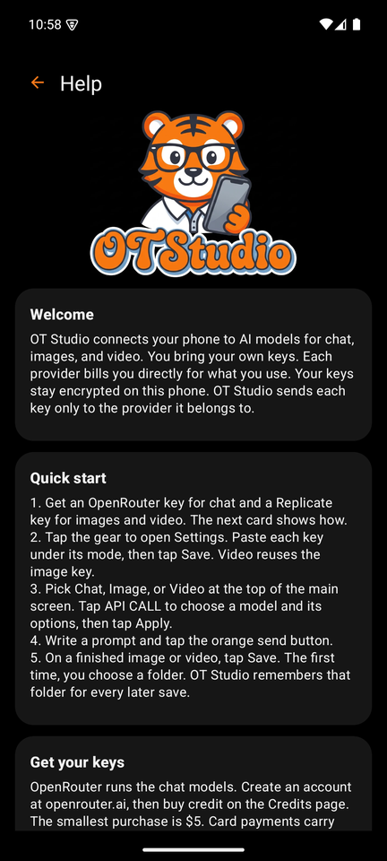

Pictures, videos, and chat from your own API keys.
OT Studio runs on Android, Windows, and Linux. You bring your own keys for Replicate, OpenRouter, and other providers, and each provider bills you directly for what you use. OT Studio has no server, no account, and no analytics.
Free software under the GNU General Public License, version 3. Install steps and checksums.

One app, three platforms
Android phone
Chat, images, and video on the phone. Chat runs on the phone with a free downloaded model, or through OpenRouter. Images, edits, and video come from Replicate. Ask for a picture or a clip in plain words, and the chat prepares the job for you.
- Needs Android 10 or later.
- Train a LoRA from your own photos without leaving the phone.
- Memory for standing instructions, and web search on Wikipedia or Tavily.
Windows desktop
The desktop version. Pictures and videos from Replicate, SpicyAPI, and OpenRouter, each with its own key. A Chat tab plans jobs with a private model in Ollama on your PC, or with a model on OpenRouter, and nothing is billed until you click Go.
- Windows 10 or 11. One installer, and updates install over the old version.
- LoRA files shared with the Android app.
- Add any other picture or video service by pasting its example request.
Linux desktop
The same desktop app as an AppImage that runs where it is, or a .deb package that installs with your package manager and appears in your menu. Tested on Linux Mint 22.
- Keys live in your desktop keyring, through the same libsecret that your browser uses.
- Picture and video work happens on your computer with the bundled sharp and ffmpeg.
- Same files, same settings, same history layout as on Windows.
What it does
- Create by chatting. Ask for a picture, an edit, or a video in plain words. A job card shows the exact prompt, the model, and the likely cost before you confirm. The chat model only plans; the app picks the service, the model, and the settings, and starts a paid job only when you tap Generate or click Go.
- Images. FLUX schnell, FLUX dev, FLUX 1.1 Pro, FLUX dev with your own LoRA, and Qwen Image with your own LoRA. The desktop adds Seedream 4.5, FLUX.2 dev, and Qwen Image Edit Plus for editing with several reference pictures.
- Video. WAN 2.7 and WAN 2.2, from text or from starting and ending frames. Make it longer continues a finished video from its last frame and joins the parts for you.
- Photos as inputs. Add a photo in any mode. Pictures carry labels such as @img1 and @img2, so a description can say which picture is which.
- Edit, Expand, Upscale. Edit a picture from a plain instruction, give it a new shape around the unchanged original, or make it two or four times larger with Real-ESRGAN.
- LoRAs for faces and styles. Train on 1 to 20 photos in your own Replicate account, in a private model. Use, import, and export LoRA files between the phone and the desktop.
- Any other service. On the desktop, paste a provider's curl, Python, or Node example, say what each field is, and save it as a service. OT Studio reads the example as text and never runs it. A shared service file never contains a key.
- Private chat. On the phone, a downloaded model answers offline and free per message. On the desktop, a model in Ollama answers at 127.0.0.1 and your messages never leave the computer.
On the phone




Your keys stay yours
OT Studio encrypts each key on your device: in the Android Keystore on the phone, for your Windows account on Windows, and in your desktop keyring on Linux. A key goes only to the provider it belongs to, in the request header that provider expects, and never to a host that stores results.
Every paid request is sent once. If the connection breaks after sending, the job says Outcome unknown instead of trying again, because the provider may have done the work. Chat on the phone, and chat with Ollama on the desktop, never leave the device.
Read the privacy page, or the full notes for Android and the desktop.
What it costs
Each provider charges per request. These figures come from the providers' own price pages in October 2026 and can change.
| Item | Typical price |
|---|---|
| Chat on the phone | Free after the model download |
| FLUX schnell image | $0.003 each |
| FLUX dev image | $0.025 each |
| LoRA training run | About $1.50 to $2 |
| WAN 2.7 video from an image | $0.10 per second at 720p |
| Upscale 2x | $0.002 each |